１３日目(9/16)～ゴールドラッシュの街～
toDawsonCity
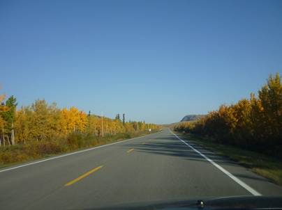
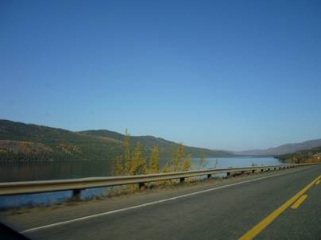
タキーニ温泉からはほぼ真北に、ユーコン川に沿ってクロンダイクハイウェイを走っていく。クロンダイクでは今から100年ほど昔、金鉱が見つかって世に言うゴールドラッシュの幕開けとなった。
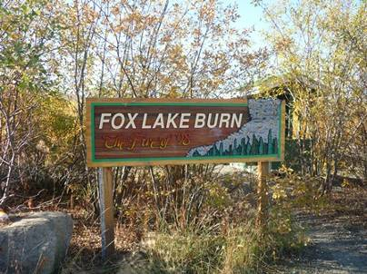
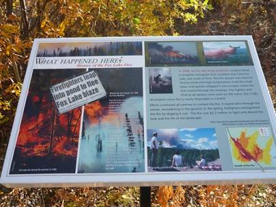
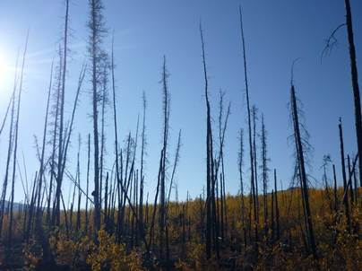
Fox
Lakeの周辺では今から10年以上前、森林火災が起きてしまったそうで、休憩所の案内板には当時の被害状況が説明されていた。実際、丸焦げの木が今でも倒れることなく立っていた。この後も、○○年森林火災といった標識を何度も見た。空気が乾燥しているので火災が起きやすいのかもしれない。
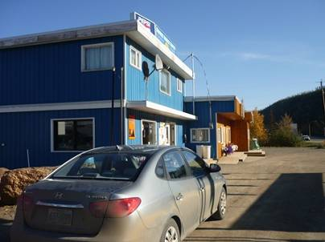
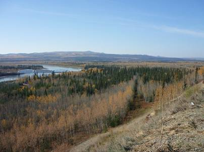
ホワイトホースからドーソンの間に街らしい街はない。あるのは小さな集落とガソリンスタンドのみ。それ以外はひたすら樹林帯を走り続ける。
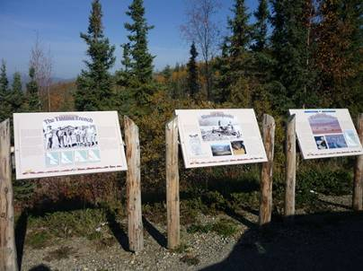
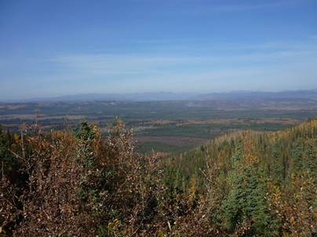
クロンダイクハイウェイの休憩所にはかつてのゴールドラッシュ時代の豆知識が書かれた案内板が置かれていた。少し小高い位置に設けられていた休憩所からは森の地平線が見れた。
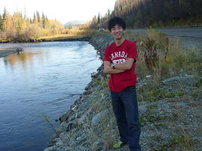
ドーソン手前の川で休憩がてら少し遊んだ。短時間なので半そでのままだが、決して暖かいわけではない。水も冷たく、とても川に入って遊ぶ気には慣れなかった。それに加え、サーモンを求めてやってきたヒグマ(グリズリー)と遭遇したら死を覚悟せねばならない。
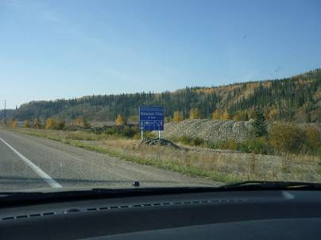
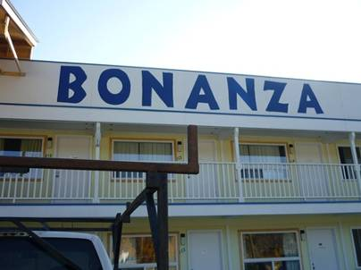
ドーソンシティの郊外のモーテルに宿泊することにした。あまりに辺鄙な場所なので金額も高いと思いきや、意外にそうでもなく二人で100ドル以下。モーテルはいつも僕らを裏切らない！旅の強い見方だ。
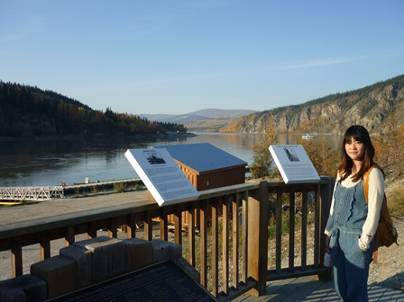
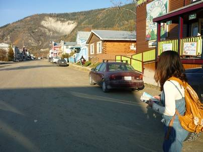
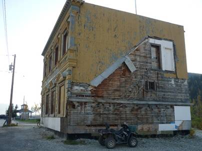
宿で一服した後、市街を散策。今では取れる金の量もすっかり減ってしまい、街はさびれ、ゴーストタウンと化していた。誰も住んでいないような廃墟も点在しており、現在ではこの廃墟などを観光資源にしているそうだ。とても悲しい気持ちになる町だった。
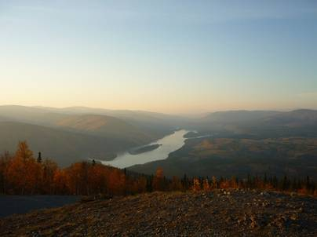
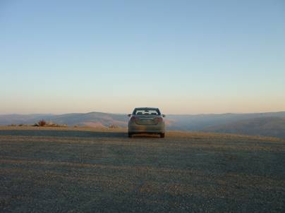
街中のレストランで食事を済ませ、宿に戻る途中Dome Roadという気になる道を見つけ、行ってみる事にした。ずいぶんと続くのぼり道の先にはドーソンの市街をはじめ、周囲を見渡すことの絶景ポイントが待っていた。暗くなったらまたここに来て、オーロラの出現を待つことにしよう。
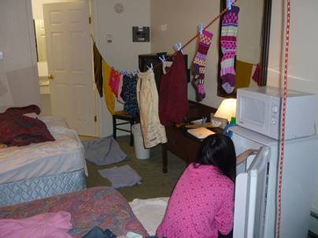
暗くなるまではまだずいぶんと時間はあるので部屋の中で洗濯。
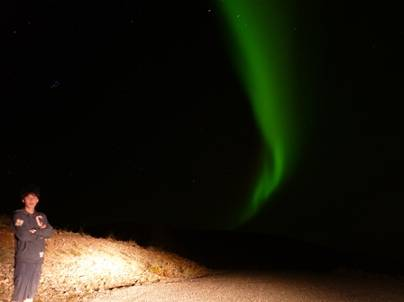
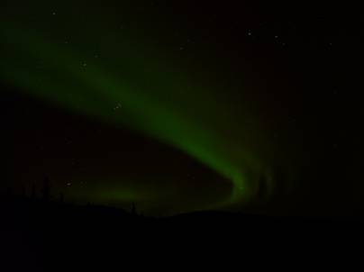
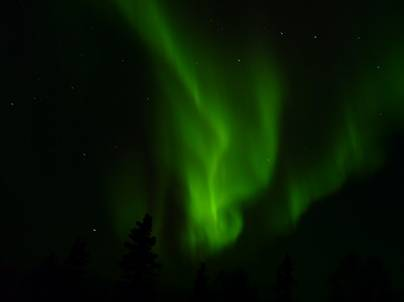
夜10時過ぎ、ようやく暗くなってきたので例の場所に繰り出した。山のてっぺんに着く前から淡く見えていたオーロラは、しばらくねばるとブレイクアップ！！満点の星が輝く夜空で優雅な舞を披露してくれた。